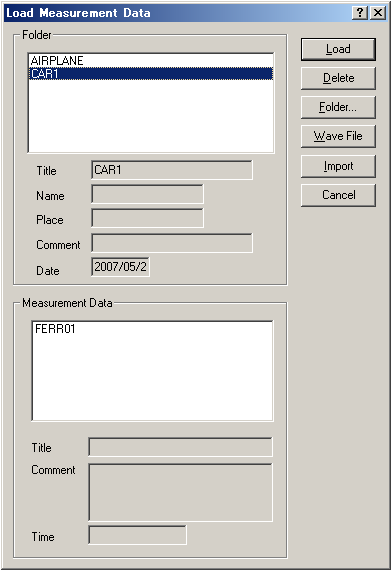

DSSF3 > RA > Reference Manual > Running ACF

| Field | Description |
|---|---|
| Folder | The folders, in which the measured data are stored, are listed. Here, select the folder which includes the data you want to load. The information (Title, Name, Place, Comment, and Date) about selected folder are shown below the list box. |
| Measurement Data | The data which are included in the folder selected in [Folder] list box are listed. Here, select the data you want to load. The information (Title, Comment, and Time) about selected data are shown below the list box. |
| Load | Loads the data selected in [Measurement Data] list box. |
| Delete | Deletes the data selected in [Measurement Data] list box. |
| Folder... | Opens [Folder Management] dialog. |
| Wave file | Opens Wave file. |
| Import | Imports database of DSSF3/RAE/RAD. |
| Cancel | Closes this dialog without doing anything. |
DSSF3 > RA > Reference Manual > Running ACF